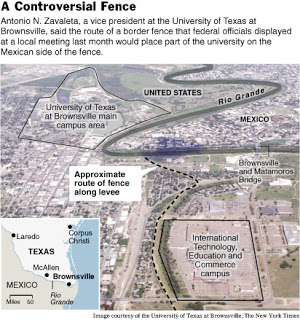

Perhaps the only unintended benefit of that initiative (unintended benefits being the only variety conferred by most government action) is the fact that it illustrates to any reasonable observer that we have far more to fear from the government ruling us than we do from the foreign nationals flooding across our southern border without official permission.
For many years, many Americans living along the border with Mexico have found their properties wrecked and polluted by caravans of desperate people who are shepherded northward by cynical flesh-peddlers called Coyotes. Some communities in the southwestern US have found their hospitals and school systems overburdened, largely because of federal policies requiring that such institutions accommodate people who crossed the border illegally, irrespective of their immigration status (or, where hospitals are concerned, their ability to pay).
There is a perception (one I've done more than a little to help create) that the current influx of immigrants from Mexico has created a huge population of welfare parasites and violent criminals. That perception is a reasonable one, even though it hasn't been clearly validated by statistical studies. And as troublesome as it is to manage the current influx, it is not an unusually large one in historic terms. Nor are the cultural differences separating the mainstream US population from Mexican and other Latino immigrants as vast as we're sometimes told.
To me it seems clear that the key distinction between today's immigration challenge, and that of roughly a century ago, is the existence of the welfare state and the influence of a large and well-funded counter-assimilationist lobby.
We should also bear in mind the economic role played by the Federal Reserve, which didn't exist during most of the great immigration wave of the late 19th-early 20th centuries. Much of the illegal immigrant laborer population attracted to the United States during the past several years found work in housing-related fields that flourished as a result of the Fed-engineered housing bubble; the bursting of that bubble has already had a measurable impact on the rate of illegal immigration – probably a much larger impact than any enforcement action taken by the Feds.


The incentive structure built by our rulers has created an economic gradient favoring unchecked immigration from Mexico. This is why enforcement measures simply don't work: It's a bit like standing at the threshold of a large waterfall and trying to beat back the currents with a toothbrush. If we had a system akin to the one that existed a century ago – a hard money economy without a government welfare safety net -- it's likely we wouldn't attract as many illegal immigrants, and those who came here wouldn't be an economic burden of any kind.
But in time-honored fashion we've seen the immigration issue transmuted into yet another justification for expansion and enrichment of government power. And thanks to the asinine Border Fence campaign, American citizens who were not threatened in any tangible way by illegal immigration now confront the prospect of losing their homes, property, and businesses through eminent domain seizures.
One thing must be addressed up front: The Border Fence is not going to be completed. Sections of it will be constructed, and huge profits will be made by the corporations who have received contracts to develop and deploy sensing technologies for the “virtual fence.” But there's no way Washington is going to erect a seamless barricade running the length of the border with Mexico. Yes, there might be some kind of Potemkin fence that starts in San Diego and ends in Brownsville Texas, albeit with gaps at least as large as the ones in the continent-spanning “human chain” created during the 1986 “Hands Across America” fiasco.
“Hands Across America” was pointless and stupid, but it didn't cost anything (apart from the $10 a head paid by those gullible enough to participate). The Border Fence is pointless, stupid, and immensely expensive. It was inspired by coarse political opportunism, and whatever portion of it is eventually built will be a tangible testament to the vanity of our political class.

Not since the ancient Egyptian ruler Cheops wasted the lives of 100,000 slaves a year to build his mausoleum (Herodotus says that the king actually forced his daughter to turn tricks in order to raise funds once the treasury was depleted) has the world witnessed such a concentrated outburst of servile enthusiasm for a project that would serve no purpose beyond gratifying the whims of a ruling elite. At least the Pyramid is as architectural marvel that has endured for millennia. Within fifty years, whatever is built of the Border Fence is likely to be nothing more than rotting, rusting debris.
For those who live along the southern border, construction of the Border Fence may mean the loss of everything they hold dear. They are doing what they can to obstruct the federal officials who have descended on their communities without invitation and are making plans to seize whatever acreage is necessary to construct the Fence.
Noel and Cecilia Benavides, who live in Roma, Texas, are in some ways representative of those who stand to lose their property to the Border Fence scam. The land on which they live has been owned by Cecelia's family since 1767. In recent years, Noel and Cecelia have grudgingly given the Feds more or less permanent access to their property in order to conduct counter-narcotics and border enforcement operations. But they have dug in their heels after the Department of Homeland Security announced plans to run its Border Fence right through their land.
“They're going to destroy an ecosystem that took centuries [to nurture] and that's never going to come back,” complained Noel, a village alderman, to the Washington Post. “But it's the law, we're told, and it's homeland security.”
Last Friday, residents of South Texas who had refused to permit federal surveyors on their land received an ultimatum from Michael Chertoff, the Commissar for Homeland Security. With the magnanimity that comes from the discretionary power to impoverish and kill those who don't cooperate, Chertoff expressed an interest in negotiating with the refractory property owners but said that if a deal isn't reached, the Regime will go to court and “seek title and possession [of the lands], and the court will determine fair market value.”
This refers, of course, to what I regard as the second most troubling provision of the US Constitution, the power of “eminent domain.” (The most troubling, I think, is the line permitting Congress to suspend the habeas corpus guarantee under certain conditions; if I had my way, both of those provisions would go the way of the Fugitive Slave Clause.)

Name the drone in this photo: George W. Bush poses next to a Predator B Unmanned Aerial Vehicle (UAV) developed for battlefield use and now deployed along the southern border. At least one Border Patrol Predator has crashed (below).
Just a few years ago, most of the conservative movement was in high dudgeon over the Supreme Court's Kelo decision, which upheld the seizure of private property through eminent domain for the purpose of enriching politically connected private developers. Well, exactly the same thing is now facing scores, or hundreds, of property owners along the southern border – and where is the conservative movement's property rights auxiliary?

Oh, that's right: They're at a Minuteman rally somewhere, being marinated in a rich broth of nativist rhetoric about the Brown Peril before adjourning to the local Mexican restaurant for chalupas and margaritas.
Meanwhile, the clock is ticking, and the engine of official expropriation is being revved up.
“The door is still open to talk, but it's not open for endless talk,” insists Chertoff, adding: “We won't pay more than market price for the land.”
Oh, how cute: After pissing away countless billions in unaccountable “cost-plus” deals for “reconstruction” projects in both the Persian Gulf and the US Gulf Coast, the Regime has suddenly discovered the merits of austerity when it comes to paying Americans whose homes and lands they plan to seize.
The same corporatist junta that was sending pallets of freshly minted $100 bills to Baghdad, whence they were tossed from the back of flatbed trucks in football-sized bundles, now considers itself honor-bound to low-ball the price it will pay to property owners along the border.
Did I mention that at least some of the corporate interests connected to the Border Wall project likewise profited from the Iraq War and reconstruction racket, as well?
These are some of the reasons why there is a literal rebellion brewing along the border.
“I tell you, on this one issue, the Farm Bureau, the United Farm Workers, Democrats and Republicans, white, black, brown, everybody is against the border fence,” insists Hidalgo County Judge Juan D. Salinas.
For a long time, the immigration wave across the southern border has been referred to as an “invasion,” which is both usefully inflammatory and factually imprecise usage of the expression. Whatever can be said about the problems generated by unchecked immigration, or the grandiose ambitions of the Reconquista movement, the word “invasion” applies much better to the actions of the federal government, which is prepared to seize the property of innocent, law-abiding citizens by whatever means may be necessary.
Please be sure to visit The Right Source.
Dum spiro, pugno!
18 comments:
I am in total agreement with you about this ridiculous fence. My favorite place to visit is the Big Bend area of Texas (not just the national park). There are small communities right on the river where people reside who have vegetable patches on both sides of the river. Vaqueros come over to work the remote ranches. These people are not the problem--yet they will end up bearing the burden.
Across the river from the Big Bend National Park is a community called Boquillas. I used to go over there--first in rowboats manned by enterprising Mexicans--then in the motor boats they were able to buy--for a beer at the bar and a look around the market. There were some U.S. hippies over there who would sing for beers. One year they started a bed & breakfast on the Mexican side that consisted of bedrolls around an outdoor fire and tortillas and frijoles for breakfast.
Because of 9-11, the little town sells its walking sticks and other crafts to the National Park by sending a man to stand 1/2 way across the river to meet the park ranger. They also sell to tourists in that manner.
Not so long ago, the doctors from Alpine went to the Mexican communities to vaccinate all the children. These people think of each other as neighbors and they cared about their neighbors and acted accordingly.
While I agree with you about 90% of the time, this is the first article you've written where I must say I disagree with you almost completely.
Without going into each and every point, the biggest contention I have is your complaint about the minutemen. Essentially what they are are privatized border security. To me, this is a good step in the right direction for property owners who rather not get the .gov answer to trespassing from migrants, which as you've said can lead to property seizure.
As for the fence, property owners should be putting up their own.
will,
it just hit me. there may be another purpose for this. think of it as a bottle neck.y right now, the southern border is owned by public and private owners. now imagine the gaps in that "line" that the govt does not control? it'd be lke a dashed line. anyone could get in, and anyone could get out. ok, now place all of the property into public/govt hands. now you need permission to cross, and of course you can only cross at approved locations. in other words, the fence ownership of the land will become a fence it itself. and i believe you are right, that fence will not go up everywhere. in the end, the immigrants will be trespassing on govt property and not private property.....but let a US citizen try and cross from north to south?! yup, we're being fenced in. first they grabbed the airports, now they grab the land crossings. next....the shores.
As for the fence, property owners should be putting up their own.
Here, you and I are in complete and total agreement!
As for the Minutemen ....
I was originally very supportive of the Minutemen for exactly the reasons you describe. On my last JBS tour many Minutemen activists came out to hear what I have to say, and they were without exception really decent people.
That being said, I think Jim Gilchrist has proven himself to be a standard-issue trend-surfer. And at its periphery the Minutemen movement has been infiltrated with some genuinely nasty people.
There's a great deal to be said about pitching in to help besieged citizens on the border. The problem is that right now, with the Feds getting ready to throw people off their land, the Minutemen are looking in the wrong direction to see the real threat.
Wouldn't the "necessary and proper" clause be the worst? I think that's in there somewhere. What were they thinking?
There's been no end of mischief wrought in the name of the "necessary and proper" clause, to be sure. But as Madison explains in Federalist #44 (which isn't his most concise or lucid offering), the powers deemed "necessary and proper" for Congress to carry out its functions were specified in Art. I sec. 8. That clause was NEVER intended to function as an open-ended grant of implied powers.
One method used by the state to deceive us on this issue is its use of the word "immigration." Immigration is only one side of the coin, "migration." There's no such thing as a one sided fence and those which are designed to keep folks out can be employed just as easily when it's deemed necessary to keep folks in.
Migration is a good thing when it's caused by natural economic growth or decline and is undertaken by those who wish to take advantage of a positive economic situation or flee from a negative one. The economic growth of 20th and 21st century in these united States however, has been artificially induced through the central government's prestidigitation of fiat currency, manipulations of market forces and socialistic wealth redistribution. One lesson we all must take home from history is that these artificial manifestations are unsustainable and the apparent wealth from them is sadly temporary. The economic growth and prosperity which we've experienced over the last 100 years has not been earned yet rather it has been borrowed from the fruits of our future generation's labors. We've been riding the gravy train for a long time and the bill is coming due soon. When it does, my friends, immigration will be the least of your problems. You might find yourself more concerned with your own emigration.
Immigration, Illegal?
Some history and facts need to be looked into.
by Asa Singleton
Immigration, it is the same old social and racial discrimination against the Irish, Jewish, Polish, Chinese, German, Negro, slave and Indian "problems" of the 18th, 19th and 20th century. Old is new again for the 21st century, . . . again!
The "Christian" roots of law for the treatment of aliens (Immigration) is found in the Pentitute, Old Teatament and the mercy of Christ is read in the New Testament. In context, read the applicable sections in the Bible at: Exodus 22:21, Leviticus 19:33-34, Deuteronomy 10:12-22, Deuteronomy 24:14-22 and Matthew 25:31-46. Read in the context of God's love and Law, not opinion. These detail how we treat aliens and strangers as home born. Home born? Then they have the same rights, (our laws are based on these God ordained truths) responsibilities and exposure just as the people did when the Declaration of Independence was penned with the following words, . . .
"We hold these truths to be self-evident, that all men are created equal, that they are endowed by their Creator with certain unalienable Rights, that among these are Life, Liberty and the pursuit of Happiness.--That to secure these rights, Governments are instituted among Men, deriving their just powers from the consent of the governed, -That whenever any Form of Government becomes destructive of these ends, it is the Right of the People to alter or to abolish it, and to institute new Government, laying its foundation on such principles and organizing its powers in such form, as to them shall seem most likely to effect their Safety and Happiness. Prudence, indeed, will dictate that Governments long established should not be changed for light and transient causes; and accordingly". . "
Nothing is differedt today as it was in times past. Self-serving "appointed and elected leaders" take on to themselves assumed powers and convert rights endowed by the Creator to licensed privilege through legal extortion and outright theft by reduction until what little is left, is lost. Destitute, the people are then driven to serve the "state" and if not productive, are sent on to the final solution, man, woman and child. The critter changes it's clothing, but it is the same creature of times past, just different ways to exclude or include for "the authorities" to rally under.
At the time of the great immigration mid 1800 to the1900's, many ticketed first class passengers did not have passports or any other I.D. to go hither and yon to Europe or the U.S.A. . . . . they just paid the fare and took off to wherever, and lived where they pleased as evident at the turn of the 20 century. Steerage on the other hand had to prove they had money and the means to live and did not have bad health. If you could pass those simple tests, you were in!
Problems we must address are English is our language, Christianity is the root heritage and moral foundation of this land, Freedom, Liberty and the Pursuit of Happiness are God ordained rights which know no borders or boundaries. Read the Declaration of Independence. Does not apply only to the English people, but to all the people in the nation when the document was penned in Philadelphia.
"They, We", all came over on different boats from different waters at different times. What made them the same as us is they came here from there to get away from them or that or were stolen and taken here from there! We should stop open brandishments of wealfare and other government programs which seems to be the major complaint supporing the problem. Churches and other organizations can do the job at a tenth of the cost we are forced to pay unlawfully by government. And yes, they, the "immigrants" will still come, subsist and succed, on their own dime!. Best we welcome them who want to work, and get rid of the ones who do evil as was done in times past. There were no such things as "Illegal Aliens" excepting the enemy, whoever that could be. If need be, we ferreted them out to ship them back to where they came from.
Of the wonderful people who were forced or volunteered to come here, they learned English, worked and bought freedom, started their own businesses, recognized this as a Christian Nation and acted accordingly. They got help on the way from family and friends, who volunteered! No force, but cooperation because they wanted too!
That is the American way, entrepreneurial fellowship! If the need fits, help it, grow it!
The Real I.D.
The real test and I.D. of who you are is who knows you and the standard test of time on the job or in the community. You will be known by what you do. Good people will communicate and grow and benifit the community, bad ones can exist only for a short while.
In reality, one did and still does not need I.D. to get a job or start your own enterprise except for government work, then comes the so called "alien" test, A.K.A. who are you? For government work, Congress has authority and wants to know who you are and has mechanisms to qualify one to work for the U.S.
Most "Illegal" stuff is racist, and "they" don't have to have I.D. to work outside of government employ! In my youth when I got work, I never needed a so called I.D. When I enlisted in the U.S. Military I did need to prove who I was because my job would entail secret stuff.
"Aliens" is all about Identity, who cares where I am from, can I do the job? Will I be reliable? Will I give honest work for the hire? What more is needed? Oh, . . . can I understand the language and or take instruction or direction? Thats is all that counts. All the rest is B.S.
If "they" are shady criminals, interlopers, sharp people will see thrue them and they will be shipped back from where they came from as they must.
This "Illegal Alien" stuff is a lot of bunkum and congress . . . . by the , . . . "Constitution, . . . THE CONSTITUTION OF THE UNITED STATES OF AMERICA . . . (Sect. 8.. The Congress shall have power: . . . ."To regulate commerce with foreign nations, and among the several states, and with the Indian tribes; To establish an uniform rule of naturalization, . . . "(please note, naturalization is not immigration) can't by law do anything about it! That is why they have not been able to pass a "law" about the matter excepting working for U.S. government agencies, institutions and organizations and etcetera of which the law ONLY applies to as I understand in the reading!
Unite States of America Citzenship if for public service, elected, appointed, or hired for privlege positions in government, also know as positions of trust and profit by and in U.S. corporations, entities and activities.
The state citizenship which is totally seperate from the U.S.A. is for state positions which is bound by how long one lived in the community.
Read the law in title 8 USC and the applicable regulations. Apply what you know about the IRS code, how it is written to be read, apply that understanding to the reading of Title 8 USC, Nationality and Immigration, accordingly. The acts read in title 8 and title 26 are for U.S. persons who are in appointed or elected privleged postitons, serving as public servants for the United States, it's territories, insular possesions, agencies, offices and corporations of the United States, and not several 50 states of the union.
Will, you are one of the best libertarian writers to come along in a Long time! We are sure lucky to have you with us, and on our side.
"Essentially what they are are privatized border security"
I don´t know if privatized cops would be any advantage. ;-)
"To me, this is a good step in the right direction for property owners who rather not get the .gov answer to trespassing from migrants, which as you've said can lead to property seizure."
And if a property owner has no problems with that? ;-)
William, your assertion that a border fence has no value or negative value is a sale you cannot get me to buy today.
People I know in Arizona are sick of their private property being routinely trespassed on, overrun, trampled down, grossly littered, vandalized, partially destroyed and de-valued to the point they can't sell it and giving it away seems their only recourse. They are sick of their water supply being breached and contaminated. They are sick of fortifying and barricading themselves in their homes. They resent the new reality of needing to carry guns when they venture outdoors. They are sick of feeling menaced and/or actually being threatened or endangered by what they and I call INVADERS.
Granted, I agree 100% with your accurate assessment of INVADERS being the federal-mafia criminal godvernment, also. In its exponentially burgeoning and gone-amok, out-of-control Big Brother-ism, land grabbing is in indirect proportion to godvernment's premeditated deliberate murdering of the Bill of Rights. You've seen enough to know this is at the behest of behind-the-scenes puppetmasters controlling lackeys in godvernment. It's all organized crime & total corruption.
Why can't the fence be along the actual border?
Why can't it be built to not expropriate private property?
Until I hear a reasonable rationale why the fence MUST steal private land from sovereign US citizens, this smacks of being a specious argument. And I won't accept criminal godvernment's false austerity argument that fence building is technologically insurmountable due to geographic barriers and "We must build it here (on YOUR private property) for convenience sake, instead of building it there on the actual border." That's a land-grabbing LIE by a gang of congenital LIARS.
The romanticized, nostalgic immigration from a century ago had one huge difference compared to today's INVASION. Yesteryear's immigrants acculturated and assimilated. Granted, there were ethnic enclaves/neighborhoods. But, children learned English, naturalized citizens needed to satisfactorily meet a modicum of English-speaking requirements, AND they complied with our laws.
Today's "undocumented migrant workers" (I HATE that Politically Correct claptrap.) come to the USA with advanced know-how to "game the system" to grab social benefits to which they have no valid ethical or moral claim, other than political pandering for expedient vote buying by criminal political hacks. Two wrongs (hack + INVADER) don't make that right. Many INVADERS have NO intention to acculturate or assimilate. Many demand INVADER rights (??? Is it just me, or is that a blatant oxymoron?) and are pimped and pandered to by extremist NGOs (non-godv't orgs, for readers who may not know) who've built a filthy lucre industry peddling "xenophobia" and "racism". The LULACs, MALDEFs, la Razas, MEChAs, whatnot and such are largely funded by above-the-law, totally unaccountable, tax-exempt global elitist foundations whose mission is to force the USA into global governance by destroying our national sovereignty.
I'm not just parroting back to you some of your own works with JBS. Actually, I researched circumventing you guys before backtracking and reading JBS info; which was like independent confirmation. The USA is now in the "downward harmonization" phase of being overrun and conquered by INVADERS. Near-slave laborers are imported to do jobs that cannot be outsourced to foreign nations. If 25 illegals willingly occupy and live in a house in shifts, working around the clock such that one-third to one-half are home at any given time . . . while next door a born-in-the-USA family of 5 or 6 lives, how is that not dragging down the standard of living for the average US family? At best, it merely decreases the born-in-the-USA family's property value by ghettoizing nextdoor into an instant city dump.
That is happening in Mesa, Phoenix, Tucson and other big and small cities. INVADERS flood over the border, infiltrate neighborhoods, drive down property values, over-burden schools, cause the closing down of medical facilities, demand and clamor for and get unwarranted social services. They challenge local law enforcers. INVADERS from gangs and commit violent crimes against better people of their own ethnicity AND born-in-the-USA citizens. Many times such violent criminals are untouchable by law enforcers because of "sanctuary" status.
This is EVIL.
How is EVIL good for the USA?
Evil INVADERS even populate and take political control of small towns; mayors, sheriff, council -- and set up base of operations for criminal enterprise within the USA. It's outrageous. It's 1000% corrupt, criminal mexico in the USA. Kill off honest law-abiding folks and impose thugocracy.
So, if a fence can stop many of them, how is such a fence is a BAD idea? I don't get it.
Many US private property owners built and even maintained fences along the border. Savage INVADERS wreck the fences repeatedly. It's sport for vandals. Owners incur exorbitant out-of-pocket costs repairing the never-ending destruction. If owners get the least bit militant in response, INVADERS escalate to overwhelmingly armed incursions. Private property owners are outmanned and outgunned. Any actions owners take can be turned against them by criminal US courts, as in the case of the border ranch family that fed INVADERS who later unjustly sued them for beatings that never happened. They lost their property (to the INVADERS) and the so-called "court of law" (not justice, which is opposite of law nowadays) sentenced jail time. In Cesspool, DC, traitorous el presidente jorge busho commits serial TREASON by encouraging INVASION of its hermanos y hermanas, grants them anti-Constitution "legal" cover by groveling to all demands and capricious whims from mexico, handcuffs the US Border Patrol, railroads patriots who effectively do their border-protection jobs, and unjustly labels the Minutemen Civil Defense Corps as "damn vigilantes" because they merely monitor INVADERS.
Eminent Domain is a real threat. But in today's bass-akwards USA, I must believe that most border patriots prefer to go down fighting rather than rolling over dead for the federal-mafia federal godvernment and the likes of a stinking TRAITOR like el busho. Americans must rightfully demand that the fed-mafia fulfill its Constitution obligation to defend borders and repel invasions.
We The Victimized People must demand the fed-mafia serve We The People, not their puppetmaster globalists. Those life-sucking ghouls want open borders and crave for their tsunami of INVADERS to continue to flood across the USA causing "downward harmonization" of our standard of living until we're plunged into a communist utopia; for you and me the proletariats, but not for bourgeoisie elitists. That fact alone should be plenty to admonish you that if they don't want a fence, then a fence must be good for We The People.
Sorry for the rant, William. I tend to agree often with you. But, on this one maybe zooming out a little further to see the bigger long-range picture will glimpse a view over the horizon to see ways to thwart elitists' Eminent Domain unjustifiable land grab, yet still erect a protective fence to inhibit their INVADER caste from overrunning and hostilely occupying the USA, while putting a kink the plans of life-sucking GHOULS - the Global Hegemony of Oligarchic Utopianists and Licentious Supremacists.
to pennsie i write:
the bible is often used to justify good, and to justify evil...you use it to justify illegal immigration. can we apply your argument to your house or apartment? can i just kick down your door and expect you to clothe me, feed me, provide me health care, and shelter me? you actually argue this--that trespassing is ok.
now, the bible also says that we should obey those ordnances that fall in line with His laws, but not those that do not. you failed to mention this. those folks who illegally come here are disobeying our laws of no trespassing. their trespassing has led to many instances of hospitals having to shut down, hit and run accidents, murders, and diseases being brought into our country. if you think this is ok then please, invite them over to your place. you must be a survivalist with enough provender for the 3K+ that cross our borders every day with an italian hand salute towards our laws. they need to stay on their side of the border and cross legally.
William, your assertion that a border fence has no value or negative value is a sale you cannot get me to buy today.
People I know in Arizona are sick of their private property being trespassed on, overrun, trampled down, grossly littered, vandalized and partially destroyed. They are sick of their water supplies being contaminated, run out and maliciously damaged or destroyed. They are sick of fortifying and barricading themselves in their homes. They are sick of getting financially stranded with de-valued property that they can't even sell at anything near its former market value. Abandoning or giving it away is more economically feasible. They resent the necessity of carrying firearms for protection whenever they venture outdoors. They are sick of feeling intimidated at home, menaced and/or actually being threatened or endangered by what they and I rightfully call INVADERS.
Granted, I agree 100% with your accurate assessment of INVADERS being the federal-mafia criminal godvernment. In its exponentially burgeoning and gone-amok, out-of-control Big Brother-ism, land grabbing is in indirect proportion to godvernment's premeditated deliberate murdering of the Bill of Rights. You've seen enough to know this is at the behest of behind-the-scenes puppetmasters controlling lackeys in godvernment. It's all organized crime & total corruption.
Why can't the fence be along the actual border?
Why can't it be built to not expropriate private property?
This smacks of being a specious argument until I hear a reasonable rationale why the fence MUST steal private land from sovereign US citizens. And I won't accept the excuse of geographic barriers and it’s technologically impossible so we must "build it here (on YOUR private property) for convenience sake, instead of building it there on the actual border." There is no justification or justice gained in empowering federal thugs to steal private property. We The Victims must not surrender what is ours to Big Brother Goliath godvernment without fighting that criminal caste.
The romanticized, nostalgic immigration from a century ago had one huge difference compared to today's INVASION. Yesteryear's immigrants acculturated and assimilated. Granted, there were ethnic enclaves/neighborhoods. But, children learned English, naturalized citizens needed to satisfactorily meet a modicum of English-speaking requirements, AND they complied with our laws.
Today's "undocumented migrant workers" (I HATE that Politically Correct claptrap.) come to the USA with advanced know-how to "game the system" to grab social benefits to which they have no valid ethical or moral claim, other than political pandering for expedient vote buying by criminal political hacks. Two wrongs (hack + INVADER) don't make that right. Many INVADERS have NO intention to acculturate or assimilate. Many demand INVADER rights (??? Is it just me, or is that a blatant oxymoron?) and are pimped and pandered to by extremist NGOs (non-godv't orgs, for readers who may not know) who've built a filthy lucre industry peddling "xenophobia" and "racism". The LULACs, MALDEFs, la Razas, MEChAs, whatnot and such are funded by above-the-law, totally unaccountable, tax-exempt global elitist foundations whose mission is to create global governance by destroying national sovereignty.
They're deliberately Balkanizing the USA.
I'm not just parroting back to you some of your own works with JBS. Actually, I researched circumventing you guys before backtracking and reading JBS info; which was like independent confirmation. The USA is now in the "downward harmonization" phase of being overrun and conquered by INVADERS. If 25 illegals will occupy and live in a house in shifts, working around the clock such that one-third to one-half are home at any given time . . . while next door a born-in-the-USA family of 5 or 6 lives, how is that not dragging down the standard of living for the average US family? Property values plummet when INVADERS rundown the nextdoor property into a city trash dump.
That is happening in Mesa, Phoenix, Tucson and other big and small cities. INVADERS flood over the border, infiltrate neighborhoods, drive down property values, over-burden schools, cause the closing down of medical facilities, demand and clamor for and get unwarranted social services. They challenge local law enforcers. INVADERS from gangs commit violent crimes against better people of their own ethnicity AND born-in-the-USA citizens. They are often untouchable due to “sanctuary” status. They populate and take over towns; mayors, sheriffs, councils. They set up bases of operations for their criminal enterprises. This is 1000% corruptly criminal mexico in the USA. This is EVIL.
How is EVIL good for the USA?
If a fence can stop some of this Evil, how is such a fence a BAD idea? I don't get it.
Many US private property owners built and even maintained fences along the border. Savage INVADERS wreck the fences repeatedly. Destroying private property is sport for vandals. Owners incur never-ending out-of-pocket expenses to repair the damage. If owners get the least bit militant in response, INVADERS escalate to overwhelmingly armed incursions. Private property owners are outmanned and outgunned. Any actions owners take can be turned against them by criminal US courts, as in the case of the border ranch family that fed INVADERS who later unjustly sued them for beatings that never happened. They lost their property (to the INVADERS) and the so-called "court of law" (not justice, which is opposite of law nowadays) sentenced jail time.
Meanwhile, in Cesspool, DC, TRAITOR el presidente jorge busho actively encourages its hermanos y hermanas to INVADE and occupy the USA. It bends over backwards committing anti-Constitution TREASON to cater to every whim, whimper and demand from mexico’s criminal caste to protect its INVADERS while quashing Rights of born-in-the-USA citizens. Your blog sounds almost as bad as el busho who shall anyday mandate Welcome Centers and rest stops for INVADERS before it skulks out of la casa blanca . . . as it denounces the Minuteman Civil Defense Corps as “those damn vigilantes” and imprisons more handcuffed US Border Patrol patriots for properly doing their sworn-oath duty to protect US borders.
Eminent Domain is a real threat. But in today's bass-akwards USA, I must believe that most border patriots prefer to go down fighting rather than rolling over dead for the federal-mafia federal godvernment. Americans must rightfully demand that the fed-mafia fulfill its Constitution obligation to defend borders and repel invasions.
We The Victimized People must compel the fed-mafia to serve We The People, not their puppetmaster globalists. Those life-sucking ghouls want open borders and crave for their tsunami of INVADERS to continue to flood across the USA causing "downward harmonization" of our standard of living until we're plunged into a communist utopia; for proletariat you and me, but not for them - the bourgeoisie elitists. That fact alone should be plenty to admonish you that if they don't want a fence, then a fence must be good for We The People.
Sorry for the rant, William. I tend to agree often with you. But, on this one maybe zooming out a little further to see the bigger long-range picture (usually your forte) will glimpse a view over the horizon to see ways to thwart elitists' Eminent Domain, erect a protective fence to inhibit their INVADER caste, and kink the plans of life-sucking GHOULS - the Global Hegemony of Oligarchic Utopianists and Licentious Supremacists.
People, people, we are all falling once again here into two traps.
First, we are lumping every illegal immigrant into one little mental box. In any group of people, there are good and bad, even, dare I say it, among us native-born Americans. The problem is, we have an innate, protective mental reflex, which takes past experience and uses it in times of danger to make instant decisions. When a truck is barreling down the road towards us, or when our child is reaching for the pot on the stove, we have no time to think - we react instantly and instinctively, based on our past experiences of danger. This mental process causes us to make instinctive pre-judgments about situations and people, including people of other races and cultures. In truth, the Latinos among us are mostly good decent people just like us, with an appreciable percentage of misfits and criminals - just like us. When we meet a Latino one-on-one, behold, he most probably does not fit into that mental box. He is a human being - just like us.
Second, the real danger to our jobs, our property, our safety, our whole way of life, is not the illegal immigrants, or the people who vote for the other party, or the people of other races, or the brutal police, or the Chinese peasants taking our jobs away, or the other motorists on the road. The real danger is the corporate rulers of this planet, who have taken over BOTH the political parties (Why do you suppose the Democrats in Congress are such a bunch of girly-men?) and who have taken over the media (You only read and see what they want you to read and see) and who could not care less if a billion, two billion, or three billion human lives are sacrificed for their aggregation of wealth. They also control the armed forces and the asshole police, who have been manipulated to hatred, just like we have, in order to keep us little people of the world humbly in line.
Some 5 years ago I read in Harper's Magazine that the 200 richest people in the world have as much wealth as the 2.5 billion poorest people in the world. Since then, the gap has gotten much worse. To get onto the BOTTOM of the Forbes 400 list of the world's richest people, you would need $1.3 billion. With a 'B'. That is one thousand three hundred millions. Personally, I can't even imagine ONE million dollars, or TEN million, much less one thousand three hundred million. And there are four hundred of those bastards who are even richer than that. And every day, as the rest of us get deeper and deeper in debt, they get richer and richer.
And those nice people aim to keep it that way. How? By keeping us little peasant morons fighting amongst ourselves about political parties, wars, job losses, illegal immigrants, sports, murdered blondes in Aruba, black ballplayers raping white women, lost kittens, lying sonofabitch politicians, brutal cops, trapped coal miners and their sonofabitch employers, and whatever else the controlled sham media can feed us to get us all stirred up into a frenzy. As long as we are in a state of rage, and fear, and hatred of each other, we will have no time to think about the fat oligarchs controlling every aspect of our miserable lives. The more we hate each other, the more we are falling in line with their grand plan. Losing your job? Blame them. Losing your house? Blame them. Dying without health insurance? Blame them. Your child dying without health insurance? Blame them. Losing your children to gang violence? Blame them. The asshole cops victimizing you? Blame them. Hungry and sick and afraid of ending up in the gutter? Blame them.
You know why the FBI murdered Martin Luther King? Because he saw that economic justice is inseparable from racial justice, and he started preaching against poverty and against war, which is how those fat oligarchs make more money than any other way. As long as us little people were fighting and killing each other over our respective skin colors, it was fine, but when MLK started to threaten the wealth of the money people, he had to go.
It is all a sham, my friends. You too, Mr. Grigg - in this article you are falling for one of the manufactured controversies, just like the rest of us. Open your eyes, people, stop hating each other, and know who is really the enemy. It is the first step to being able to change anything in our futile oppressed lives.
Sweet dreams to all.
Chris Taylor
Arlington, Virginia
Actually, Will, in his recent interview with Tim Russert, Ron Paul used precisely that term [invasion] to characterize the current problems on the U.S. - Mexican border. I wouldn't use that term (mass migration would be closer to reality), as invasions are typically one government (or tribe) moving onto another's land for either plunder, colonization, or some other reason. However, it is clear that the Mexican government, which used to be thought of as much more corrupt that the U.S. government [not clear that is the case any longer], is actively encouraging Mexicans to move to the U.S. So, some might properly think of it as an invasion.
Wish you'd have a chat with Ron Paul and set him straight on the immigration issue. Its like he's not only accepted the authoritarian position, he's multiplied it a hundred times over. He has the least libertarians stand on this issue of any current candidate. Hope he comes around.
Maybe instead of pouring money into a "fence" the government should consider changing the cost of immigration and educating the mexican people on how to properly enter the U.S. Most of these people are poor and uneducated and don't understand how these type of issues can be resolved legally.
FYI, the US gov. hands out pamphlets to mexicans on what to say to a border patrol agent when interrigated (lies in order to stay in the US illegally).
Here's the result of our open southern border:
Border Invasion Pics
..Napolitano lies...the border is not secure.
Post a Comment